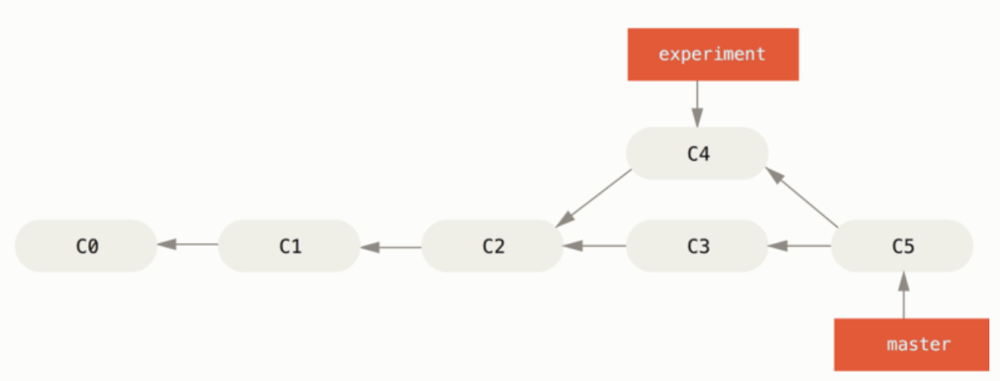
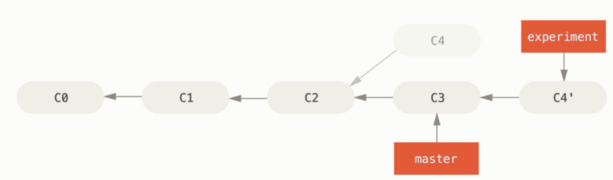
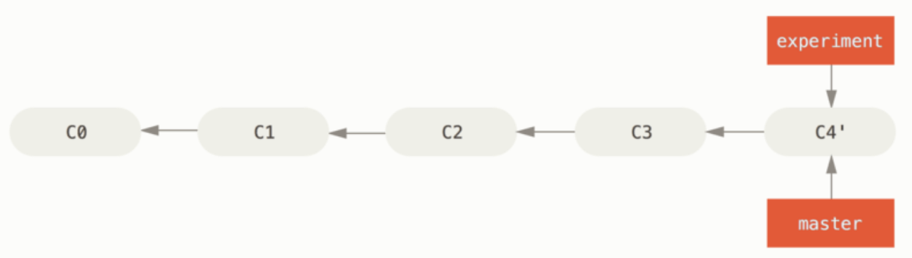
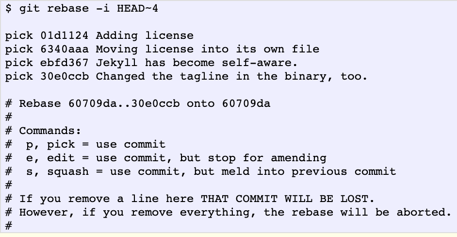
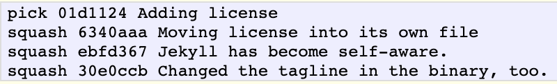
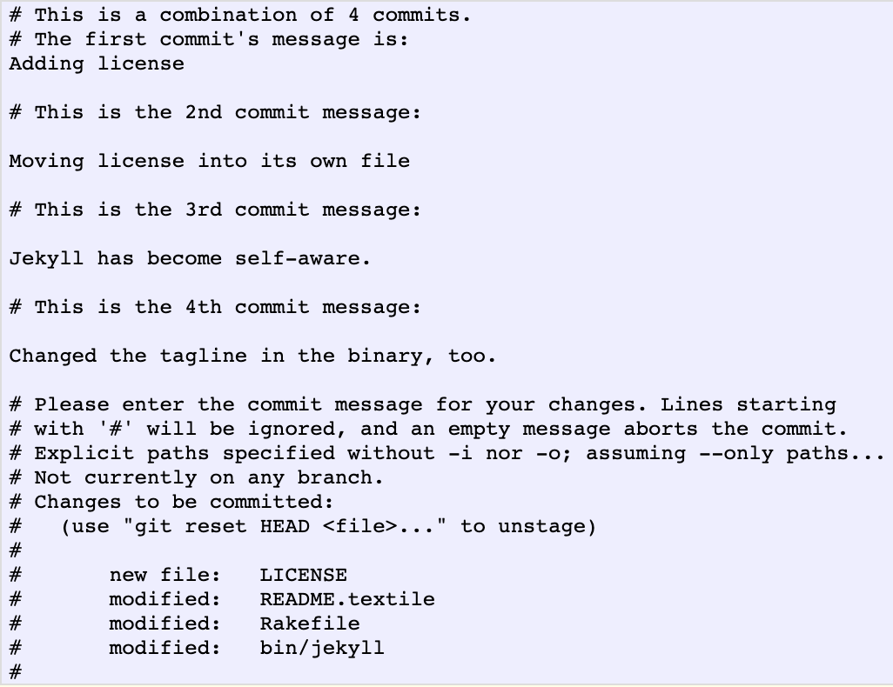

Git
Setup
brew install git
git --version
# test ssh
ssh -T git@github.com
Basics
origin-A default remote pointer to your repo on githubmaster- Default branchorigin/master- a remote tracking branch on local. Its hidden and is supposed to stay in sync withmasteron remoteorigin.- Working directory -> Staging -> Head.
addupdates Staging from working directory.resetoverrides Staging with last commit on Head. You undo anaddwith areset.checkoutoverwrites working directory with a copy from staging. You undo an edit withcheckout.
.Gitignore
# ~/.gitignore_global can have .gitignore entries
$ cat .gitignore
*.[oa]
*~
# ignore all .a files
*.a
# but do track lib.a, even though you're ignoring .a files above
!lib.a
# only ignore the TODO file in the current directory, not subdir/TODO
/TODO
# ignore all files in any directory named build
build/
# ignore doc/notes.txt, but not doc/server/arch.txt
doc/*.txt
# ignore all .pdf files in the doc/ directory and any of its subdirectories
doc/**/*.pdf
Working with Local Repo
# create local repo
mkdir <dir>
cd <dir>
git init
# ... make some changes
# status
git status -s # short version
git status # shows which files changed
# add
git add . # or
git add -A # or
git add -i # interactive
# commit
git commit -m 'some comment'
# Combine add and commit
git commit -a # implicitly add files already existing in the last commit
Working with Remote
Remote must exist before hand on Github.
# clone a remote repo
git clone <your.remote.git> <your.output.directory>
# later if you need to sync local from remote
git checkout main
git fetch main
git reset --hard origin/main # resets to HEAD of remote
Connect a local repo to a remote repo:
Scenario: You have an empty repo on Github, and you never cloned it. But on local you have a repo that you wish to connect to this empty repo.
cd local_repo
git remote add origin https://your.remote.git # link local to remote
# or the below two achieve the same result
git push -u origin main # first time link to remote and push to remote
# git push --set-upstream origin main (not needed)
Scenario: Fork someone's repo into your repo.
- You fork original repo to your repo
-
You clone your repo to local. A default remote "origin" is created
-
You want to add another remote to your local - lets call is upstream
git remote add upstream https://original.repo.git
Scenario: Create a remote branch and then use it locally
# first create the remote branch named new-feature
git checkout -b new-feature from-branch
Scenario: Create a local branch and then push to remote
# from-branch is optional. If not provided, git assumes current branch
git checkout -b new-feature from-branch
git branch -vv # won't show a tracking branch for new-feature
# -u requires first time only
git push -u origin new-feature # or..
git push -u origin HEAD
git branch -vv # now shows a tracking branch for new_branch
Scenario: You have a local folder dev which is not yet tracked against an existing remote branch
cd dev
git checkout --track origin/dev # or
git branch -u origin/dev
Misc commands
# show remote servers configured on local
git remote # by default it would show origin
git remote -v
git remote -vv # also include tracking branches on local
git remote show <remote> # inspecting a remote
# rename a remote
git remote rename <old_name> <new_name>
# remove a remote
git remote remove <remote_to_be_removed>
# use alias on git config
git config --global alias.pushd "push -u origin HEAD"
git pushd
# use alias on bash
alias gp='git push -u origin HEAD'
gp
# fetch and pull
git fetch <remote_repo_name> # fetch and pull from remote into staging
git pull # fetches and merges into working directory
push works only if you cloned from a server to which you have write access and nobody has pushed in the meantime. Since remote is a moving branch, its possible that the push to include your local changes on remote may fail. Read #Checkout for more details. Here is how you address it:
# Refresh the tracking branch. This is a remote tracking branch on local
git fetch origin master
# Integrate our changes with remote changes
git rebase origin/master
# The above two commands can be combined into one command
git pull --rebase origin master
# Finally attempt the push to remote again
git push origin master
Diff Command
git diff # diff between Working directory and Staging
git diff --cached # diff between Staging and HEAD
git diff --staged # what's in Staging which will go to Head on next commit. This will not show all changes, only what is staged.
# diff between some-branch and Working directory
git diff <source_branch> <target_branch>
git diff <some-branch>
git diff HEAD
# diff between two commits
git diff first-commit last-commit
Log Command
By default,
git logwill only show commit history of the branch you have checked out.
git log # too long
git log -p -2 # shows last 2 commit details
git log --since=2.weeks # list of commits in last two weeks
# you can specify "2008-01-15", "2 years 1 day 3 minutes ago"
git log --stat
git log --pretty=oneline # compressed log view
git log --oneline --decorate # shows where the branch pointers are pointing
git log --pretty=format:"%h %s" --graph
git log --oneline --decorate --graph --all
git log --pretty=format # shows format help
git log --pretty=format:"%h - %an, %ar : %s"
git log --author=bob # commits by certain author
git log --graph --oneline --decorate --all # decorated
git log --name-status # which files have changed
git log --since=2.weeks # --before, --after, --until
git log --since="2 years 1 day 3 minutes ago"
# commits but not merged
git log --pretty="%h - %s" --author='Junio C Hamano' --since="2008-10-01" --before="2008-11-01" --no-merges -- t
Checkout Command
When dealing with a branch (say, master) copied from a remote repository (say, origin), there are three branches one must consider:
- The copy of
masterin the local repository - The copy of
masterin the remote repository - The local branch
origin/masterthat records the last known position of the remote branch. Branch 3 tracks (tracking branch) the remote branch, not because it is itself a remote branch, its a local copy of the remote branch.
The fetch command copies branch (2) to (3).
git fetch origin master
The checkout command copies branch [3] to [1].
git checkout master
The push command copies branch (1) to (2), and incidentally updates (3) to match with (2).
git push origin master
Copy files from Head or Staging to the Working Directory, and to optionally switch branches.
- If the commit name is provided, the files are copied from commit to staging and wd.
- If commit name is not provided, the files are copied from staging to wd.
Reset Command
Moves the current branch to another position, and optionally updates the stage and the working directory. It also is used to copy files from the history to the stage without touching the working directory.
# default to HEAD and copies to staging, doesn't touch wd
git reset
# default to HEAD and copies only the mentioned files into staging, doesn't touch the wd
git reset -- files
# default to HEAD and copies to staging and wd
git reset --head
# HEAD~3 means N-3 commit.
git reset HEAD~3 # copies history into staging only
git reset HEAD~3 --hard # copies history into staging and wd
git reset HEAD~3 --soft # simply moves the HEAD, doesn't copy to staging or wd
Remove Files
To remove a file from Git, you have to remove it from your tracked files (more accurately, remove it from your staging area) and then commit. The git rm command does that, and also removes the file from your working directory so you don’t see it as an untracked file the next time around.
rm <file> # removes untracked files or files in WD, but not in S
git rm <file> # removes from staging and working directory
git rm --cached FILENAME # remove from staging, retain in working directory
git commit -f # file is gone
git rm log/\*.log # removes all files with .log extension
git rm \*~ # removes all files ending in ~
Moving Files
Git does not explicitly track file movement. If you rename a file in Git, no metadata is stored in Git that tells it you renamed the file. However, Git is pretty smart about figuring that out after the fact.
git mv file_from file_to
# above is equivalent to following
mv file_from file_to
git rm file_from
git add file_to
Undo Things
You committed early
If you commit and then realize that you forgot to stage the changes in a file you wanted to add to this commit, you can:
git commit -m 'Initial commit' # some file(s) forgotten.
git add <forgotten_files>
git commit --amend
Unstage a staged file
Let’s say you’ve changed two files and want to commit them as two separate changes, but you accidentally type git add * and stage them both. How can you unstage one of the two?
# file-a and file-b added to Staging
git add *
# unstage file-b
git reset HEAD file-b
# file-a is committed
git commit -m
# stage file-b
git add file-b
# commit file-b as a separate commit
git commit -m
Unmodify a modified file
You realize that you don’t want to keep your changes to the file-b? How can you revert it back to what it looked like when you last committed
git checkout -- file-b
Undo commits permanently
git commit ... # mistake(s)
# The last three commits HEAD, HEAD-1, HEAD-2 are bad and you don't want to commit them again.
git reset --hard HEAD~3 # T
Undo a commit and redo
git commit ... # mistake
git reset --soft HEAD^
# make the edits
git commit -a -c ORIG_HEAD
Squashing commits
# you are in <my-feature>
git fetch origin
git reset --soft origin/master # Moves HEAD to last commit of Remote
git commit
git push origin feature/<my-feature> -f # fix the error
Tagging
# list
git tag
git tag -l "v1.8.5*" # shows only tags with v1.8.5.*
# create tag
git tag -a v1.4 -m "tag comment"
git tag
# lightweigh tag, only stores checksum
git tag v1.4-lw
git tag
git show v1.4-lw
# tag a previous commit
git tag -a v1.4 <some-prefix-of-commit-checksum>
git tag -a v1.4 9fceb02
# push tag
git push <remotename> <tagname>
git push origin v1.4 # a generic git push will not push tag
# delete tag
git tag -d v1.4-lw # delete from local
git push origin --delete v1.4 # delete from remote
# checkout tag
git checkout v1.4 # just for exploration and discarding
git checkout -b version2 v1.4
Branching
# creates the 'master' branch in the 'origin' repo that will be created on local
git init
# create a new branch (two commands)
git branch new_branch_name # create
git checkout new_branch_name # switch to it
# create a branch (combined into single command)
git checkout -b new_branch_name # create and switch
git branch -vv # check tracking branches on local
# example: simple flow
# feature branch
git checkout main
# or
git checkout main
git fetch main
git reset --hard origin/main # resets to HEAD of remote
git checkout -b feature-branch # new feature branch
vim index.html
git commit -a -m "create new footer"
# hotfix
git checkout main
git checkout -b hotfix # new hotfix branch
vim index.html
git commit -a -m "fix email address"
git checkout main
git merge hotfix # merge hotfix branch into main
git branch -d hotfix
# continue on feature branch
git checkout feature-branch
vim index.html
git commit -a -m "finish the new footer"
git checkout main
git merge feature-branch # no merge conflict
# if merge conflict, update index.html on main
git add index.html
git commit -m "Final commit"
git branch -d feature-branch
##### Merge A into B
git checkout B
git fetch A
git merge A
# or
git checkout B
git pull A # does the fetch and merge
# example: create a branch from main and push the branch to remote
git pull origin main # Make sure local repo matches with remote
git checkout -b <new-branch-name> # create branch and switch to it
git push origin <new-branch-name>
# another feature example
git checkout -b feature-branch main
git status
git add <some-files>
git commit
git push -u origin my-feature
# more changes
git push
# merge after PR
git checkout main
git pull
git pull origin feature-branch
git push
# management
# if you don't see all remote branches on local then run:
git remote update
git branch # list of current branches
git branch -all
git branch -a
git branch -v # last commit on each branch
git branch --merged # list of branches merged into the branch you're on.
git branch --no-merged # list of branches you haven't yet merged in.
git branch --no-merged master # list of branches not merged into the master
git branch -av
git branch -avv # which remote branches are linked to your local branch
git remote -v # what remote branches exist
# rename branch
git branch --move old_branch_name new_branch_name # rename branch on local
git push <remotename> <localbranchname>:<remotebranchname>
git push --set-upstream origin new_branch_name # add new branch on remote
git push origin --delete old_branch_name # delete old branch on remote
# delete branch
git branch -d my-branch # local
git push <remotename> --delete <branchname> # remote
# create a branch and push to remote
git checkout -b my-branch # create branch and switch to it
git push -u origin my-branch # push to remote
# make changes, git add, git commit -m etc...
# push the branch to remote for others to see
git push <remotename> <branchname>:<branchname> # first time
git push -u origin my-branch <can be master>
# remote branches
git ls-remote <remote> # list of remote branches
git remote show <remote>
# synchronize local from remote, will only change S, not WD
git fetch <remote>
git fetch origin
# synchronize local from remote, change S and WD
git pull
# same as
git fetch
git merge
# push branch to remote
git push <remote> <local_branch>
git push origin my_branch
# someone else
git fetch origin # will get origin/my_branch on local
git checkout -b copy_of_my_branch origin/my_branch # now has a local branch
# delete remote branch
git push origin --delete mybranch
# drop all changes in local
git fetch origin # fetch latest
git reset --hard origin/master # switch local master to it
# replace some local changes, not everything
git checkout --<filename>
# copies last commit to both Staging and WD
git checkout HEAD -- files
# switches Working directory and Staging to last commit in HEAD
git checkout HEAD
# pushing local dev branch to master
git push origin dev:master
# update local with newest commit
git pull # this does fetch and merge
#merge another branch to your branch
git merge <branch>
# pulling a different branch to local
git pull origin master:dev
# rebasing - integrate changes from one branch into another
# use merge or rebase which provides cleaner history
Rebase
There are two main ways to integrate changes from one branch into another: the merge and the rebase. The rebase offers a cleaner history, while the merge will offer full transparency.
# experiment has C4 made on C2
# master has C3 made on C2
# C2 is the common ancestor
git checkout experiment
git rebase master # Add experiment to master on C3
# above two commands can be replaced with
git rebase master experiment
# merge
git checkout master # new changes are on existing commit C3
git merge experiment # master + experiment are now on C4



Squash Commits
Take some smaller commits and combine them into larger ones.
Only do this on commits that have not been pushed to remote repo.
Example: Rebase using the last 4 commits from where the HEAD is with HEAD-4.
# assume you have 4 commits on local.
git rebase -i HEAD 4 # Rebase using last 4 commits from where HEAD


User enters pick on first and squash on the next to combine all 4 commits into the first commit in the list.

And we can enter a new commit message.
Forking
Entities:
- original repo
- your repo (fork of original)
High-level flow:
- Fork the original repo and create your repo
- Clone your repo to your local system
- Add a Git remote to point to the original repo
- Create a feature branch in your report to place your changes
- Make changes to the new branch
- Keep your fork in sync
- Commit the changes to the branch
- Push the branch to your repo
- Open a pull request from the new branch to the original repo
- Clean up after your pull request is merged into the original rep
# after forking
# clone your repo to local system
git clone https://your.repo.git
# Add a remote called "upstream" pointing to original repo
# Git has already added a remote "origin" to the clone on your local system
# and this allows you to push changes back to your report on github
git remote add upstream https://original.repo.git
# Know that above is useful only if you can directly push from local to original repo such as git push upstream. Most likely original repo will not allow these writes.
# work in a branch
git checkout -b <new branch name> # assume name is "new-feature"
# do some changes
git add ...
git commit ...
git rebase ... # squash your commits
git push origin new-feature # adds the branch to your report
# keep your fork in sync
git pull upstream master # pull into local from original repo
git push origin master # push changes to your repo
# now open a PR to original repo
# original repo author accepts your changes and merges them into the main repo
# update your repo with the latest from original repo
git pull upstream master
# delete your branch
git branch -d new-feature
git push origin master
# push the deletion of the feature branch on your repo
git push --delete origin new-feature
Merging
Confirm the receiving branch.
# ensure HEAD is pointing to correct merge receiving branch
git status
git checkout <receiving> # i.e.
git checkout master
Make sure the receiving and the from (merging) branch have the latest commits
git fetch
git pull
Merge now
git merge <from-branch>
Example of a fast-forward merge:
git checkout -b new-feature master
git add <files>
git commit -m "some comment"
git checkout master
git merge new-feature # or
git merge --no-ff new-feature
git branch -d new-feature
Example of a three-way merge:
git checkout -b new-feature master
# edit some files in new-feature
git add <files>
git commit -m "some comment"
git checkout master
# edit some files in master
git add <files>
git commit -m "some comment"
# Merge in the new-feature branch
git merge new-feature
git branch -d new-feature
Git Config
git config --global user.name "John Doe"
git config --global user.email johndoe@example.com
git config color.ui true
git config format.pretty oneline
git help config
Pull Request
To create a PR, you must have the changes committed to the branch.
https://yangsu.github.io/pull-request-tutorial/
https://hackernoon.com/how-to-git-pr-from-the-command-line-a5b204a57ab1
File status
File status: untracked, unmodified, modified, staged.
untrackedis a new file not in previous commit snapshot.untrackedgets tracked only after add.- add: moves file from
untrackedtostaged - edit: moves file from
unmodifiedtomodified - add: moves file from
modifiedtostaged - commit: moves file from
stagedtounmodified - remove: moves file from
unmodifiedtountracked
Standard practice
- Two main branches:
origin, anddevelop - Multiple supporting branches:
features,release-*, andhotfix-*
# create feature branch from develop
git checkout -b myfeature develop
# feature is now stable and ready to move forward
git checkout develop
git merge --no-ff myfeature
# push develop
git push origin develop # pushes branch develop to remote origin
git push origin dev:master # optionally pushes local branch to remote's master branch
# create release branch on develop
git checkout -b release-1.2 develop
# release is now stable
git checkout master
git merge --no-ff release-1.2
git tag -a 1.2
# the changes done in release need to be available to develop
git checkout develop
git merge --no-ff release-1.2
# delete release 1.2
git branch -d release-1.2 # delete on local
git push origin --delete release-1.2 # delete on remote
# create hotfix on master
git checkout -b hotfix-1.2.1 master
# do some work on hotfix
git commit -a -m "some hot fix into 1.2.1"
git checkout master
git merge --no-ff hotfix-1.2.1
git tag -a 1.2.1
git tag 1.2.1 1b2e1d63ff # first 10 of the commit id
# changes done in hotfix need to be available to develop
git checkout develop
git merge --no-ff hotfix-1.2.1
# delete local branch of hotfix
git branch -d hotfix-1.2.1
# delete remote branch of hotfix
git push origin --delete hotfix-1.2.1
Bash alias
grbi - git rebase -i master
git rebase -i --autosquash
gcane - git commit -amend --no-edit
grbc - git rebase --continue
push - git push origin `git rev-parse --abbrev-ref HEAD`
gll - git log --oneline --decorate
gcf - git commit --fixup <commit>
# ~/.gitignore_global can have .gitignore entries
Reference
http://marklodato.github.io/visual-git-guide/index-en.html
https://hackernoon.com/git-push-and-pull-tips-and-tricks-7f9163539f02
https://ohshitgit.com/
https://git-scm.com/book/en/v2